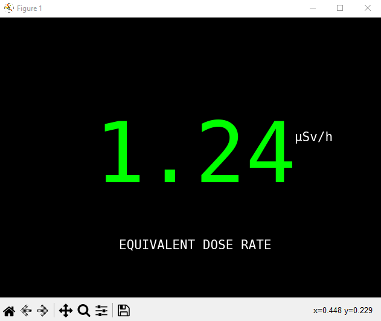

My Projects

Palm Tree Detection Web App
This is a simple web application that detects and counts the number of palm trees in an uploaded image. The app uses a custom-trained object detection model hosted on Roboflow and serves predictions through a FastAPI backend. The result is a bounding-box-annotated image along with a count of detected palm trees.
Learn MoreForceX AI Chat
I try some small and free models on Hugging Face. This journey began with the DeepSeek free model, but it turns out that it’s not available for free on the Hugging Face Inference API. So, I explored other free options, including GPT-2, GPT-Neo, Falcon, and LLaMA, before finally choosing the Mistral 7B model for its speed and open-access capabilities.
Learn MorePneumonia Detection System
In this project, I developed a deep learning model to detect pneumonia from chest X-ray images using Convolutional Neural Networks (CNNs). By preprocessing medical imaging data and training a CNN for binary classification (Pneumonia vs. Healthy), It can be used to assist healthcare professionals with an automated tool for early and accurate pneumonia diagnosis.
Learn More
getSensData
getSensData is a web application designed to real time collect data from sensors, display, and visualize medical data such as oxygen saturation and heart rate. The application uses a form to gather user information and displays the data in real-time using Chart.js. The backend is built with Node.js and Express, and it stores data in a MongoDB database.
Learn More
Optical Character Recognition (OCR) - IT09 Data Panel
This project develop an automated system for reading and recording radiation dose data displayed on the IT-09 Data Panel using OCR technology. IT-09 Data Panel is a device for measuring radiation dose. I'm created Python script simulates the real-time display of an equivalent dose rate (μSv/h), mimicking data readings from the IT-09 Data Panel.
This Python script captures real-time images from a webcam, processes them, and extracts text using Tesseract OCR.
Learn More